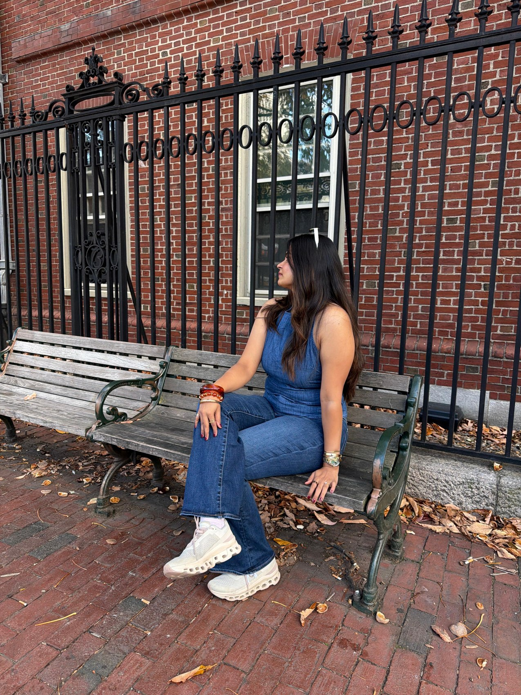

Somewhere new
That place everyone’s talking about? I want to see it for myself. Exploring is my favourite way to get out of my head.
the “let’s just go” friendA LITTLE INTRODUCTION
Curious about people.
Thoughtful with data.
Always taking the scenic route.
A curious mind.
A story still unfolding.
Hi, I’m Akshita. I’m studying Management of Technology at NYU, with a background in business analysis and a soft spot for beautiful everyday moments.
I’m the kind of person who sees a new place and thinks, “Let’s go.” A viral café, a hidden corner, something I’ve never tried before. Curiosity usually wins.
A good playlist lifts my mood. A really good meal can turn a day around. And a thoughtful question? That’s often where my next idea starts.
I’m drawn to understanding people, finding the story in data, and turning what I learn into something useful.
equal parts heart & “but why?”
A few reliable ways to make my day.
That place everyone’s talking about? I want to see it for myself. Exploring is my favourite way to get out of my head.
the “let’s just go” friendSome days need a softer song. Others need the volume turned up. Music has a way of making everything feel lighter.
a soundtrack for every feelingMy bad-day reset is simple: something delicious. Bonus points for a lovely little spot and a new thing on the menu.
comfort, with a side of curiosityPlaces I wandered. Little moments I kept.
Not everything needs a plan. Some things just need a “let’s go.”
With a background in business analysis and a graduate focus on technology management, I’m drawn to the space where people, data, and decisions meet. My career interests connect a shared curiosity: how can we understand a problem better and make the next decision more thoughtful?
still learning. always becoming.Understanding people’s needs and shaping ideas into thoughtful, useful experiences.
People · Problems · PossibilitiesFinding the story in the numbers and turning curiosity into clearer decisions.
Patterns · Questions · InsightsConnecting the dots between a problem, the people it affects, and a way forward.
Context · Clarity · DirectionFrom asking better questions to making things clearer.
JUN 2024 — FEB 2025
Accuworks Engineering · India
Analyzed business processes with SQL, Excel, and Power BI, built KPI dashboards, and gathered requirements across three cross-functional teams.
20% improvement in project efficiency.JAN — APR 2024
Programmatix Institution
Coordinated schedules, resources, and daily operations across departments, improving scheduling accuracy by 25%.
JUL — AUG 2021
Ekeeda · India
Collaborated with writers and subject experts on content quality and consistency, and created responsive pages with HTML and CSS.
Technology with a purpose behind it.
Combined Groq-powered LLaMA3, diffusion pipelines, and cloud APIs in an interactive assistant designed to be easier for non-technical users to navigate.
SEP 2024 — MAY 2025
Built a sensor-based temperature and humidity monitoring device with a cloud-hosted analytics dashboard to make environmental readings easier to understand.
JAN — APR 2024
Created a business-focused website and optimized its MySQL database, aligning the experience with the company’s goals and improving query response time by 35%.
JAN — JUL 2022
For the big dreams, the busy days, and the moments in between. A little encouragement, from my corner of the internet to yours.
take what you need. pass a little kindness on.A NOTE TO KEEP CLOSE
You don’t need to have the whole path figured out. One thoughtful step is a beautiful place to start.
01 / 12 little reminders
A project to talk about? A class in common? A café I need to try? Whether you’re a future collaborator, a fellow student, or a new friend, I’d love to hear from you.
More than a title.
A person in progress.